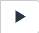
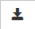
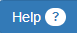
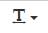

「Nyle」に準じたライブラリ(Nyleスタイル)と
「DXRuby」に準じたライブラリ(DXRubyスタイル)の２つのうち、
お好みのライブラリ(およびテンプレート)を使ってプログラミングをすることができます。
それぞれ下記のリンク先にアクセスすることによって、
スタイルに応じたテンプレートが表示された状態でエディタが起動されます。
| Nyleスタイル | nyle-canvas.html |
|---|---|
| DXRubyスタイル | nyle-canvas.html?style=dx |
なお、プログラムを最初から編集しなおす場合は、
エディタが開いている状態でブラウザのリロードをおこなってください。
エディタ内にプログラムを記述し、エディタ上の[実行]ボタン()を押すとプログラムが実行されます。
(下記「アニメーションGIFによるエディタ操作例」の「(1)プログラムの編集と実行」を参照)
画像ファイルは、エディタ内にドラッグアンドドロップすることによってプログラム上で扱うことができるようになります。
それ以外のプログラムの編集および実行の操作については、前述と同じです。
(下記「アニメーションGIFによるエディタ操作例」の「(2)プログラムの編集と実行(画像ファイルの取込みあり)」を参照)
エディタ上の[保存(ダウンロード)]ボタン()を押すとプログラムが HTMLファイルとして保存(ダウンロード)されます。
ただし、ブラウザの種類や設定によって保存場所やファイル名の指定などの挙動が変わるのでご留意ください。
(下記「アニメーションGIFによるエディタ操作例」の「(2)プログラムの保存(ダウンロード)」を参照)
保存した HTMLファイルをエディタ内にドラッグアンドドロップすると、プログラムが読み込まれます。
(下記「アニメーションGIFによるエディタ操作例」の「(2)プログラムの読込み」を参照)
エディタ上の[ヘルプ]ボタン()を押すと、スタイルに応じたライブラリの APIリファレンスが表示されます。
エディタ上の[フォントサイズサイズ]ボタン()を押すと「大・中・小」の３種類からフォントサイズを選ぶことができます。
(エディタ起動時の初期設定は「中」)